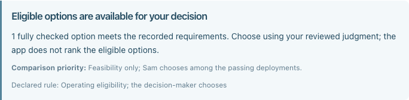
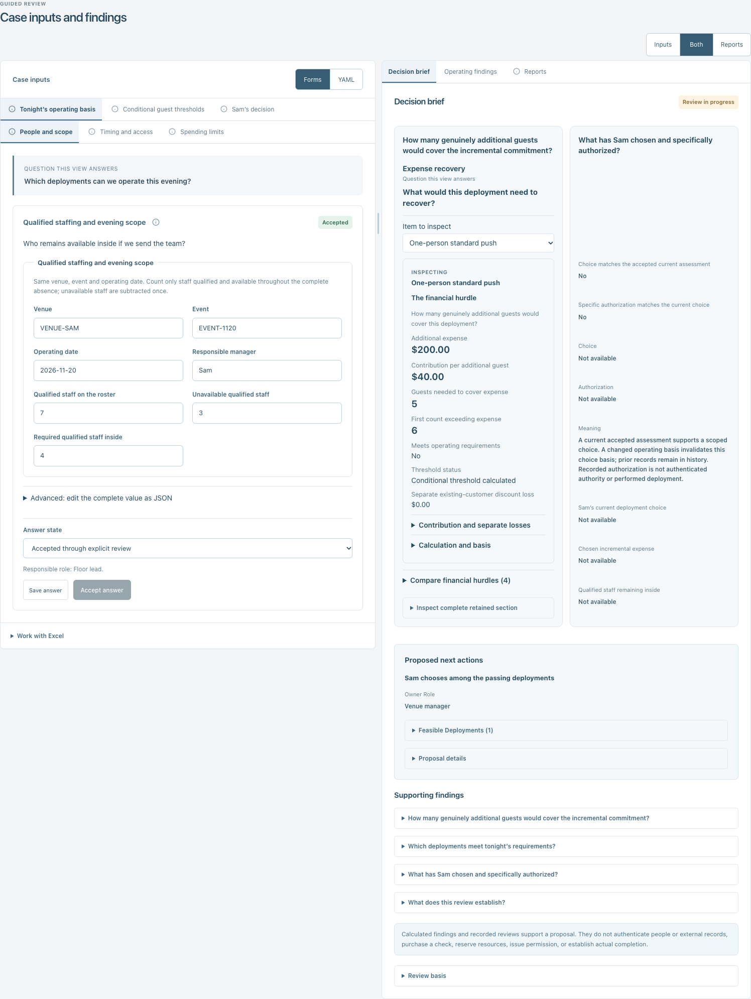
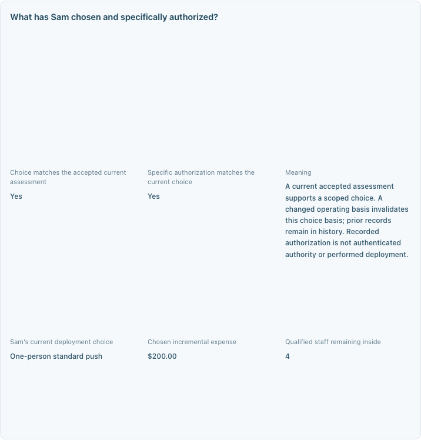
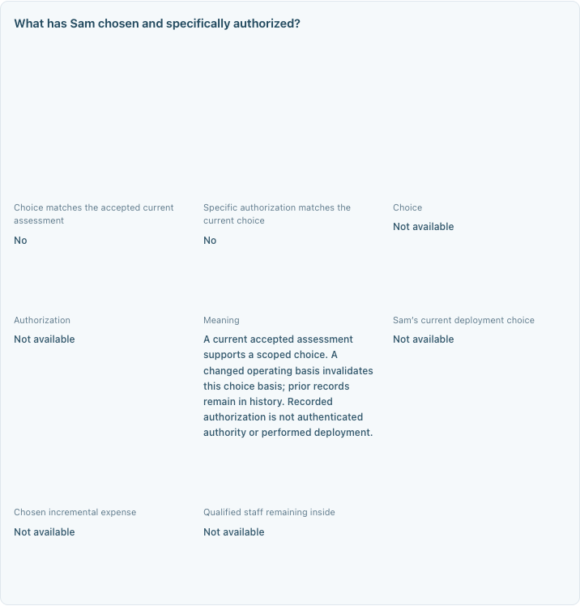
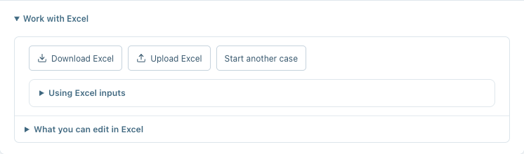

Sam has made the call. With five qualified staff available, the club can send one promoter and keep the required four people inside. He has chosen the $200 standard-offer deployment and recorded its specific authorization. Five genuinely additional guests would cover that expense under the reviewed assumptions; whether they will come remains unknown.
Before the team leaves, another employee calls out. A callout means a scheduled employee reports they cannot work. Now only four qualified staff are available. The floor lead knows about the absence. The promoter may still be working from Sam’s earlier “yes.”
If the assignment goes ahead unchanged, only three people remain inside. Sam risks sending a team on the strength of a decision whose supporting facts have already changed.
A call or shared message could stop the departure. The continuing problem is making sure everyone understands the current basis, and that the earlier authorization is not mistaken for a current decision. Decision Lab brings the changed fact back through review and identifies who must act next.
This continues Sam’s original deployment decision. An arrangement here is a complete assignment: people, location, timing, offer, transport and permissions that must work together.
Sam, the venue, records and decisions are fictional. The paired views show the retained worked case before and after the third callout. No deployment or measured promotion return is established. Sources and scope.
Opens an unreviewed starter or resumes your saved review. Use Sam’s worked case to match the article screenshots.
The staffing change removes an option.
The requirement stays the same: at least four qualified staff inside throughout the planned absence. With five available, holding and sending one promoter meet the operating requirements. With four available, everyone is needed inside. Only holding remains feasible.
Before: five available.
Hold or send one promoter. The one-person assignment leaves four inside.

After: four available.
Hold only. Sending one would leave three inside and fail the minimum.


The $200 assignment’s financial hurdle still reads five guests to cover its expense. The updated brief retains that conditional threshold while showing the inspected deployment does not meet the operating requirements. A potential financial benefit cannot supply the missing floor coverage.
Put the changed fact in the right hands.
The floor lead brings the third absence into the staffing answer and reviews it for this venue, evening and planned absence. The workflow assigns responsibility to the questions the decision depends on.
In Both layout, open Forms → Tonight’s operating basis → People and scope. Change Unavailable qualified staff from 2 to 3, keeping the seven-person roster and four-person inside minimum. Save answer records the change awaiting review. The independently selected report stays open; an unfinished form edit still describes a draft, rather than the basis of its displayed finding.
| Responsible role | What they review | Why its scope matters |
|---|---|---|
| Floor lead | Qualified staffing, callouts and inside coverage. | The available count must cover this evening’s planned absence. |
| Event coordinator | Timing and recorded access permission. | Both must apply to the actual event and outreach window. |
| Finance reviewer | Contribution assumptions and separate discount losses. | The financial hurdle depends on the offer and costs under review. |
| Venue manager | Spending delegation, operating finding, choice and specific authorization. | A choice and its authority must match the current reviewed basis. |
Staffing, access and spending are smaller questions within Sam’s commitment decision. Structured thinking makes those dependencies explicit. In this example, one operating app checks the operating conditions together; the workflow organizes their review and the subsequent human choice.
A reviewer records a name and assigned acting role before accepting an answer. These are responsibility records in the local review. They do not authenticate identities or supply a shared multi-user approval system.
Review the new finding.
Updating staffing is the first handoff. In Review responsibility, the floor lead supplies a reviewer name and assigned role, then accepts the revised answer. In the report panel, the manager opens Operating findings → Coordinate supporting assessments, re-evaluates, inspects the operating finding and chooses Accept result for this review with the manager’s review responsibility recorded. Accepting an input and accepting its calculated result are separate tasks.
The finding now says that only holding passes. It supplies a current basis for Sam’s next decision. Inspecting an alternative changes the information on screen; it leaves his recorded choice and authorization unchanged.


The earlier authorization needs current support.
The decision brief checks whether the recorded choice matches the accepted current assessment, and whether the specific authorization matches that choice. The following views show why retaining history and having a current decision are different things.
Before: current choice and authorization.


After: a replacement choice is needed.


Sam’s earlier $200 choice and authorization remain in the case. They explain what he decided when five staff were available. After the reviewed reassessment, they no longer complete the current review.
Return the decision to Sam.
The brief names the venue manager for the supported follow-up: Sam chooses among the passing deployments. Only holding passes. Inspect the captured next-action view.

The coordination problem now has a clear handoff. The changed fact has reached the decision, the earlier authorization is visibly insufficient for the current situation, and Sam knows why he must act again. He can explain to the owner that the $200 assignment was supportable with five staff, while four available staff are all needed inside.
A replacement choice has not yet been recorded. The captured case ends with that responsibility outstanding. Sam must make a current choice before the team relies on the review to release a deployment. Responsible people still control actual dispatch; Decision Lab does not dispatch or recall the crew.
A financial assumption has a different review path: finance checks it and Sam reconsiders the spending judgment. In this release, changing contribution does not automatically invalidate the operating-basis choice.
Optional: use Excel for the staffing change
Open the workflow and import Sam’s retained case. Keep it separate from the fresh, unreviewed starter. Beneath the input panel, expand Work with Excel and choose Download Excel. In its staffing worksheet, change Unavailable qualified staff from 2 to 3, keeping the roster and inside minimum unchanged.
Choose Upload Excel, inspect Review workbook changes and confirm the intended staffing edit before Apply inputs. This records changed inputs awaiting review. Follow the same explicit answer review, operating reassessment and finding review described above.
What you can edit in Excel identifies its supported worksheets. Access records, spending delegation, Sam’s proposed deployment and the specific authorization remain in the saved case when workbook changes are applied. Excel starts collapsed; it is an alternative to the Forms change.


A separate test: what if the crowd leaves too late?
Timing can remove an option too. This is a separate controlled comparison with seven staff available, rather than another event in the five-staff story. Sam authorizes by 7:45 p.m.; the crew reaches the promotion point at 8, works until 8:45 and returns by 9. An 8:15 p.m. event exit is inside the outreach window. A planned 30-minute journey puts an accepting customer at the venue around 8:45, before the 9:15 p.m. latest useful arrival.
Change only the exit to 9 p.m. It falls outside the planned outreach window, and the same journey reaches the club at 9:30. The outreach arrangements fail the declared timing conditions even though staffing and expense fit. Holding remains available.


Sam needs another supported location or schedule, a revised objective, or no further push. Extending the crew’s hours changes the assignment, coverage and possibly cost; those inputs need another review.
Reaching the crowd during outreach still does not establish that anyone will accept the offer or arrive. A Better Plan Can Leave Us Just as Uncertain explains why a workable plan can leave the business outcome unresolved.
Sam can now distinguish a supported assignment from one whose premises have changed. The next article turns to the unresolved question: before the next $200, what does he need to learn?